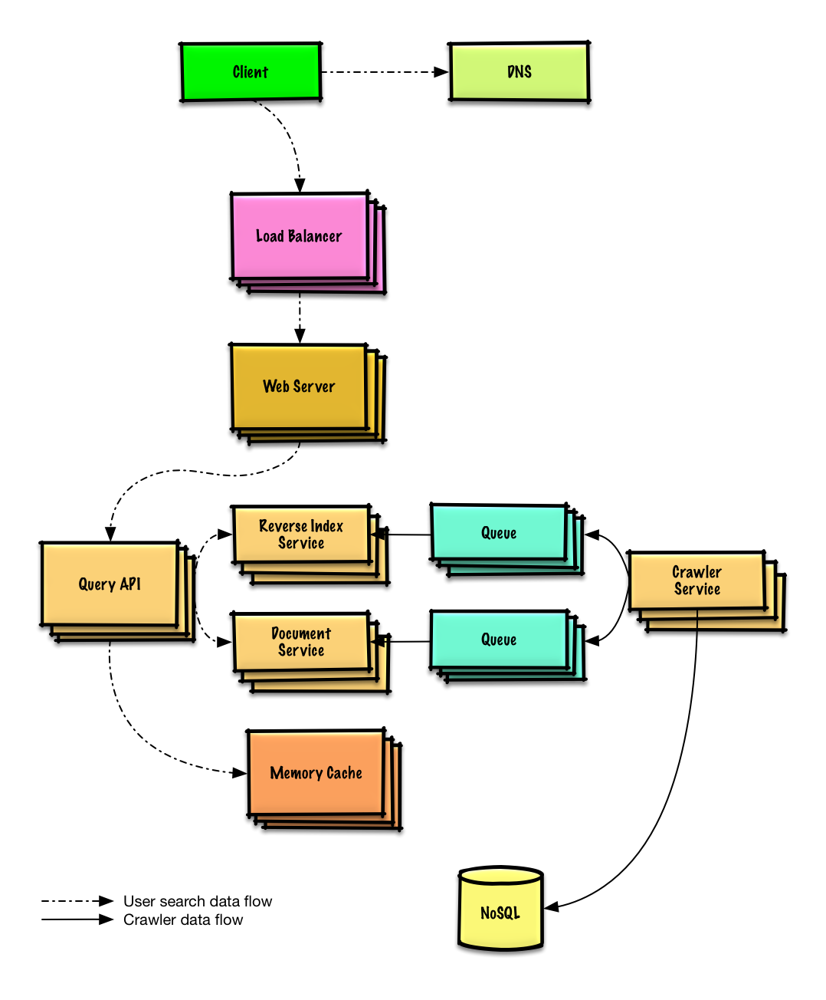
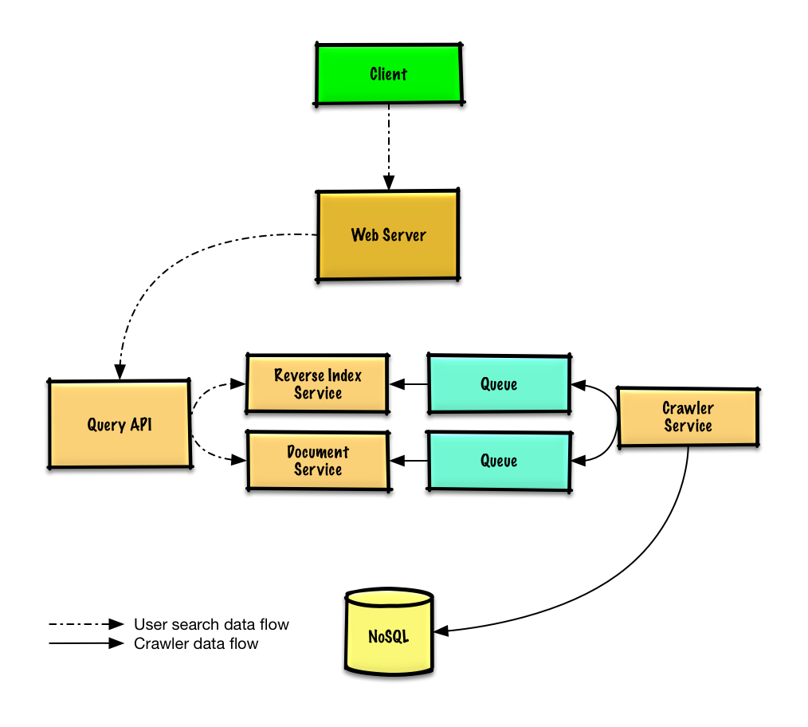

MODULE 14 · SYSTEM DESIGN SOLUTION
Solution to the exercise: "Design a web crawler"
Build the crawling + indexing pipeline that a search engine runs underneath — deliberately without reaching for an existing system like Solr or Nutch, so the components stay visible.
Out of scope: search analytics, personalized results, page rank.

Start from a seed list of links_to_crawl, ranked by overall site popularity (or seeded from hub sites like Yahoo/DMOZ if no ranking exists yet). A crawled_links table tracks what's already been processed, keyed by a page signature. Both fit naturally in a key-value NoSQL store — Redis sorted sets work well for the ranked links_to_crawl queue specifically.
The Crawler Service repeatedly: pulls the highest-priority link, checks crawled_links for a matching page signature. If a near-duplicate is already crawled, it lowers that link's priority (this is exactly what stops infinite loops on cyclic links) and moves on. Otherwise it crawls the page, queues reverse-index and title/snippet generation jobs, computes the page's signature, and moves the link from links_to_crawl to crawled_links.
# -*- coding: utf-8 -*-
class PagesDataStore(object):
def __init__(self, db):
self.db = db
pass
def add_link_to_crawl(self, url):
"""Add the given link to `links_to_crawl`."""
pass
def remove_link_to_crawl(self, url):
"""Remove the given link from `links_to_crawl`."""
pass
def reduce_priority_link_to_crawl(self, url):
"""Reduce the priority of a link in `links_to_crawl` to avoid cycles."""
pass
def extract_max_priority_page(self):
"""Return the highest priority link in `links_to_crawl`."""
pass
def insert_crawled_link(self, url, signature):
"""Add the given link to `crawled_links`."""
pass
def crawled_similar(self, signature):
"""Determine if we've already crawled a page matching the given signature"""
pass
class Page(object):
def __init__(self, url, contents, child_urls):
self.url = url
self.contents = contents
self.child_urls = child_urls
self.signature = self.create_signature()
def create_signature(self):
# Create signature based on url and contents
pass
class Crawler(object):
def __init__(self, pages, data_store, reverse_index_queue, doc_index_queue):
self.pages = pages
self.data_store = data_store
self.reverse_index_queue = reverse_index_queue
self.doc_index_queue = doc_index_queue
def crawl_page(self, page):
for url in page.child_urls:
self.data_store.add_link_to_crawl(url)
self.reverse_index_queue.generate(page)
self.doc_index_queue.generate(page)
self.data_store.remove_link_to_crawl(page.url)
self.data_store.insert_crawled_link(page.url, page.signature)
def crawl(self):
while True:
page = self.data_store.extract_max_priority_page()
if page is None:
break
if self.data_store.crawled_similar(page.signature):
self.data_store.reduce_priority_link_to_crawl(page.url)
else:
self.crawl_page(page)
page = self.data_store.extract_max_priority_page()Duplicate urls are cheap to remove — for huge lists, MapReduce to keep only urls with frequency 1. Duplicate content at different urls is harder: generate a content signature and compare signatures for similarity (Jaccard index and cosine similarity are the two classic approaches named here).
# -*- coding: utf-8 -*-
from mrjob.job import MRJob
class RemoveDuplicateUrls(MRJob):
def mapper(self, _, line):
yield line, 1
def reducer(self, key, values):
total = sum(values)
if total == 1:
yield key, total
def steps(self):
"""Run the map and reduce steps."""
return [
self.mr(mapper=self.mapper,
reducer=self.reducer)
]
if __name__ == '__main__':
RemoveDuplicateUrls.run()Store a timestamp per crawled page; refresh on a default cadence (e.g. weekly), shorter for popular or frequently-changing sites. A robots.txt-style mechanism can let site owners influence crawl frequency directly.
Client → Web Server (reverse proxy) → Query API, which: tokenizes the query (strip markup, split terms, fix typos, normalize case, convert to boolean operators), queries the Reverse Index Service for matches (it ranks and returns the top results), then the Document Service for titles/snippets.
$ curl https://search.com/api/v1/search?query=hello+world
→ [{"title":"foo's title","snippet":"foo's snippet","link":"https://foo.com"},
{"title":"bar's title","snippet":"bar's snippet","link":"https://bar.com"}, ...]

Query popularity is extremely skewed — some searches run constantly, most run once. A Memory Cache (Redis/Memcached) in front of the Reverse Index and Document Services absorbs the popular ones and smooths out spiky traffic (memory reads ≈250μs vs. 4x on SSD, 80x on disk, which is why this cache matters so much). The Reverse Index and Document Services themselves will need heavy sharding and federation (Module 07) to hold the data volume and request load.
Crawler-specific tuning: cache DNS lookups locally in the Crawler Service instead of re-resolving every request; use connection pooling to hold many open connections efficiently; consider UDP (Module 10) where it fits; and make sure outbound bandwidth is provisioned generously, since crawling at this scale is bandwidth-bound as much as compute-bound.
Next in Module 14: Mint.com. Previous: Twitter timeline.